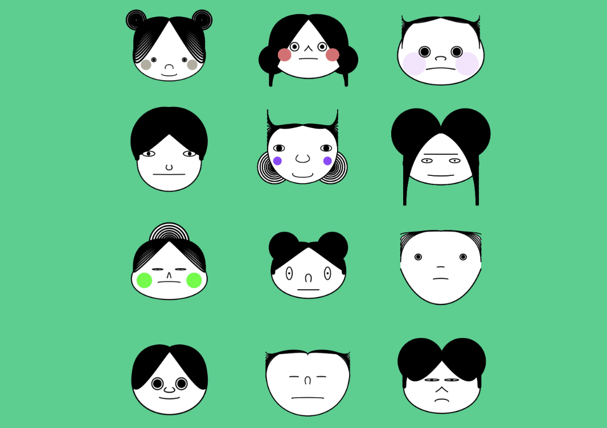

Hardware Overview
Like an audio synthesizer allows with sound samples, the Visual Synthesizer allows users to twist knobs and push buttons to manipulate the geometric proportions of the default face pictured in Figure 2.Software Output
The results are a variety of new, unique faces made up of Bezier curves and ellipses.
